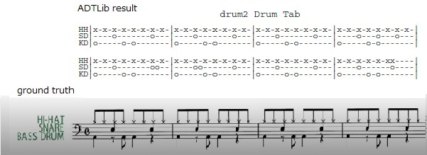

A trial to Automatic Drum Transcription Library
This is a trial to Automatic Drum Transcription Library ADTLib on google colaboratory using tf1.5.x cpu and python3.6.x.
notebook
ADT_trial_colab_notebook.ipynb is google colaboratory notebook and ADT_trial_colab_notebook_with_full_output.ipynb is notebook with full output as ADT is a command
ADT_trial_colab_notebook_with_full_output_b.ipynb is notebook with full output as ADT is a python function
Automatic Drum Transcription (ADT) result
drum1.wav and drum2.wav are basic 8 beat drum pattern. ADT result is not perfect.


drum3.wav is samba drum pattern. ADT result is not good.